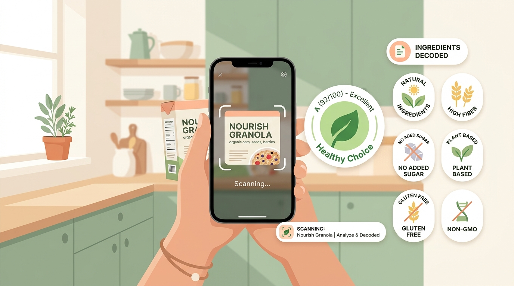

About BiteLens
Our mission is to translate complex ingredient lists and industrial additive codes into plain language so Indian consumers never have to guess what they are eating.

Bridging the Label Decoding Gap in India
When shopping for packaged groceries in India, reading the back of a container often feels like trying to decipher a chemistry paper. Critical nutritional context is buried behind cryptic International Numbering System (INS) codes (like INS 621 or INS 150d), fine print obscures added sugars, and front-of-pack marketing rarely reflects actual processing levels.
BiteLens was conceived as an academic Software Group Project (SGP) deliverable to demonstrate how client-side optical character recognition, transparent plain-language translation engines, and peer-reviewed scoring heuristics can empower consumers directly on their personal devices.
Plain-Language First
Food literacy should never require a biochemistry degree. Every chemical code is translated into plain, everyday English with functional purposes and origin clarity.
Scientific Transparency
Our Health Score draws on the international NOVA framework and published FSSAI regulations—strictly separating legal regulatory status from scientific evidence concerns.
Dual Scoring Model
We decouple industrial chemical processing from personal macronutrient targets so consumers can evaluate real trade-offs rather than opaque single ratings.
Project Research Team
Developed under the Department of Computer Science & Engineering, Indus University, under the guidance of Prof. Dipali Panchal.
Pinak Pipaliya
IU2441051292
Optical UI & Frontend
Client-side Tesseract.js camera OCR integration, interactive bounding box overlays, responsive mobile interface, and telemetry workbench.
Anuraag Sharma
IU2441051286
Architecture & Privacy
On-device privacy architecture, DOMPurify sanitization, SHA-256 integrity hashing, Indian consensus BMI math, and pediatric safety gating.
Harshil Mehta
IU2441051298
Additive Database & Taxonomy
INS additive dictionary curation, FSSAI regulatory limits indexing, OCR digit confusion mapping (I→1, O→0, S→5, B→8), and swap heuristics.
Vedant Kundaliya
IU2441051305
Packaging & Testing
Standalone Android APK containerization, Vite production bundling, Service Worker offline caching, and mathematical test automation.
Privacy Policy & Data Sovereignty
BiteLens is architected from the ground up on a strict 100% On-Device Privacy Model. We believe consumer nutritional data and camera feeds represent sensitive personal information that should never leave your possession.
✓ Zero Cloud Telemetry
Label photos, optical OCR text streams, and barcode scans are processed entirely in your device's browser memory. No images or logs are transmitted to remote servers.
✓ No Accounts or Passwords
We require no signups, passwords, phone numbers, or email addresses. Health goals and scan history persist solely within your browser's private localStorage.
✓ Zero Third-Party Trackers
BiteLens contains zero advertising SDKs, tracking pixels, behavioral cookies, or analytics beacons.
✓ Complete User Erasure
You retain complete control. Tapping "Clear" in the Dashboard or wiping your browser cache instantly and irrevocably purges all stored telemetry.
Get in Touch & Feedback
Have questions regarding the BiteLens methodology, additive taxonomy, or academic project report? Send us a message.